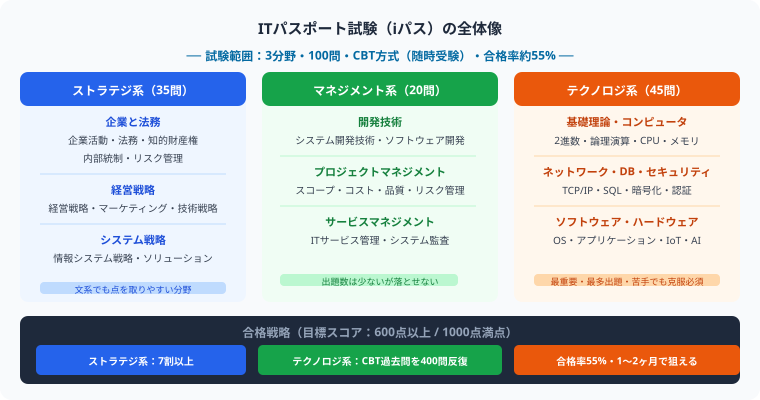
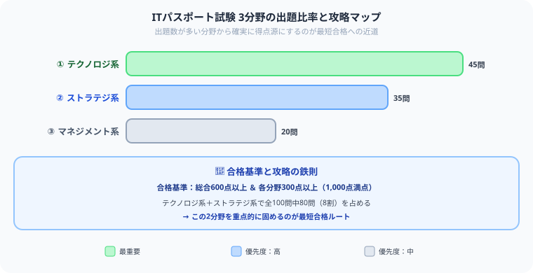

ITパスポートの勉強時間・独学合格ガイド【2026年版】
こんにちは、大谷です！
「就活や大学の講義のためにITパスポートを取ろう！」と決意して、いざテキストを開いた瞬間……「うわっ、なんじゃこりゃ……2進数の計算だの、IPアドレスだの、アルファベットだらけの専門用語が多すぎて頭爆発するわ！本当に2ヶ月で合格できるの！？」とフリーズしていませんか？（お気持ち、めちゃくちゃ分かります笑）。
僕は公認会計士を目指して毎日数字や法律と格闘していますが、ITパスポートで出題されるテクノロジーやビジネス戦略の知識は、これからのAI時代を生き抜くために絶対に損をしない最強の基礎教養です。
今回は、僕が難関資格の学習で培った逆算の視点をベースに、45問出題される「テクノロジー系」の頻出テーマを最速で陥落させ、独学・最短で合格をもぎ取る「無敵の2ヶ月攻略ルート」を優しくナビゲートします。
また、モチベ維持のために、記事の末尾のほうにある【いいねボタン】をポチッと押してもらえると、めちゃくちゃ嬉しいです！
ITパスポート（iパス）は経済産業省が認定するITの基礎知識を証明する国家資格です。文系・理系問わず社会人・学生に人気で、就職活動や業務でのIT活用に役立ちます。合格率は約50%と比較的高く、正しい方法で学べば1〜3ヶ月で合格できます。

ITパスポート試験は3つの分野から構成されており、それぞれの出題数と難易度を把握することが効率的な合格への近道です。
ITパスポートの基本情報
| 項目 | 内容 |
|---|---|
| 試験方式 | CBT方式（全国のテストセンターで随時受験） |
| 合格率 | 約50% |
| 合格基準 | 総合600点以上かつ各分野300点以上（1,000点満点） |
| 必要勉強時間 | IT初心者：100〜200時間、IT経験者：50〜100時間 |
| 出題数 | 100問（四肢択一） |
3分野の出題比率と優先度

| 分野 | 出題数 | 内容 | 優先度 |
|---|---|---|---|
| ストラテジ系（経営戦略） | 35問 | 経営・マーケティング・法務 | 高 |
| マネジメント系（プロジェクト管理） | 20問 | システム開発・プロジェクト管理 | 中 |
| テクノロジ系（IT技術） | 45問 | ハードウェア・ソフトウェア・ネットワーク・セキュリティ | 高 |
独学スケジュール（2ヶ月プラン）
| 時期 | 内容 | 1日の目安 |
|---|---|---|
| 1〜2週間目 | テキストで全体像を把握（ストラテジ系・マネジメント系） | 1時間 |
| 3〜4週間目 | テキストでテクノロジ系を学習 | 1時間 |
| 5〜6週間目 | 過去問演習（直近3年分） | 1.5時間 |
| 7〜8週間目 | 弱点補強・模擬試験・直前対策 | 1.5時間 |
分野別攻略ポイント
テクノロジ系（最重要）
2進数・16進数の変換、ネットワークの基礎（IPアドレス・DNS・HTTP）、情報セキュリティ（暗号化・認証・マルウェア）、データベース（SQL・正規化）が頻出です。用語の意味を正確に覚えることが重要です。
テクノロジ系の計算や用語は、丸暗記では100%全滅します。攻略のコツは、自分がIT社会を冒険するキャラクターになったつもりで、公開鍵・秘密鍵という「暗号化の防具」や、マルウェアを防ぐ「ファイアウォールの防壁」の仕組みを脳内にアニメ化して繋ぐことです。このパズル的な関係性さえ掴めば、45問中30問以上はノー勉強に近い感覚で楽々もぎ取れるようになりますよ！
ストラテジ系
経営戦略（SWOT分析・バランススコアカード）、マーケティング（4P・CRM）、法務（著作権・個人情報保護法）が出ます。ビジネス用語に慣れていない方は、身近な例に置き換えて理解するのが有効です。
マネジメント系
プロジェクトマネジメント（WBS・ガントチャート）、システム開発（ウォーターフォール・アジャイル）が主要テーマです。出題数が少ないので深追いせず基本用語だけ押さえましょう。
おすすめテキスト3選
※ 以下の教材リンクにはAmazonアソシエイトリンクを含みます。
【大谷の本音】イラストがとにかく豊富で、文系でも途中で挫折せずに読み切れる最高の入門書です。
【大谷の本音】4コマ漫画の解説が秀逸。難しいNWやDBの仕組みが、文字嫌いな人でもスッキリ頭に染み込みます。
【大谷の本音】「なぜ」を飛ばさず解説してくれるので、丸暗記が苦手な人ほど刺さる一冊。理屈から理解したい派におすすめです。
【大谷の本音】ITパスポートの知識がそのまま土台になるので、勢いが落ちる前に連続受験するのが一番コスパいいです。
受験生がよく引っかかる3つの落とし穴
- ストラテジ系を「文系だから得意」と油断して対策を怠る：ストラテジ系は暗記量が多く、経営戦略のフレームワーク（SWOT分析など）を正確に覚えていないと失点します。「文系寄りだから何となく解ける」という思い込みで対策を後回しにしないでください。
- テクノロジ系の計算問題を丸暗記だけで乗り切ろうとする：2進数変換やIPアドレスの計算は、パターンを丸暗記するだけでは応用問題に対応できません。「なぜそうなるのか」という仕組みから理解しておくと、問われ方が変わっても対応できます。
- 合格基準の「総合600点」だけを見て、分野ごとの基準を見落とす：合格には総合600点以上に加えて、各分野で300点以上必要です。ストラテジ・マネジメント・テクノロジのどれか1分野が極端に苦手だと、総合点が高くても不合格になることがあります。
まとめ
- ITパスポートの独学に必要な勉強時間はIT初心者で100〜200時間
- テクノロジ系（45問）・ストラテジ系（35問）の2分野が合否を決める
- 情報セキュリティ・ネットワーク・データベースは頻出テーマ
- CBT方式なので好きなタイミングで受験できる
- 2ヶ月間、1日1時間の継続で十分合格圏内に入れる
ITの世界は、知れば知るほど「攻略できる冒険」になる！
最初はアルファベットの羅列にしか見えなかった専門用語も、1つずつ「防具」や「防壁」のイメージで繋げていくと、いつの間にか自分の武器になっています。ITパスポートはその第一歩であり、これからのAI時代を生き抜くための最強の基礎教養です。
この記事が少しでも「攻略のヒント」になったら、この下にある【いいねボタン】をポチッと押してもらえると、めちゃくちゃ嬉しいですし、次の記事を書く力になります！
そして、覚えた知識は使わなければすぐ忘れてしまうもの。Study Questで今日の学習時間を記録して、合格までの成長を「見える化」していきましょう。